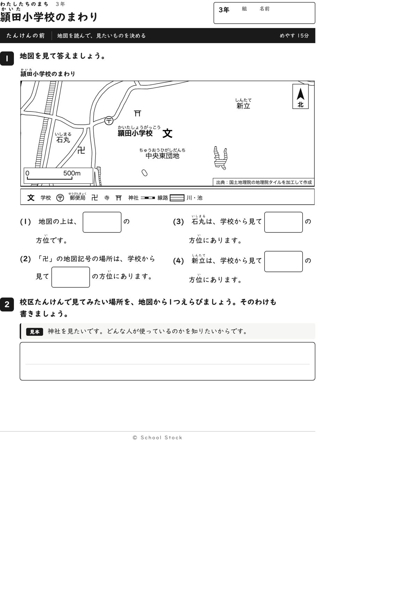
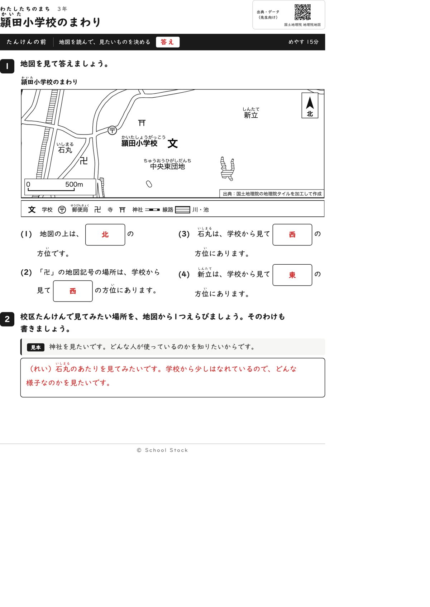
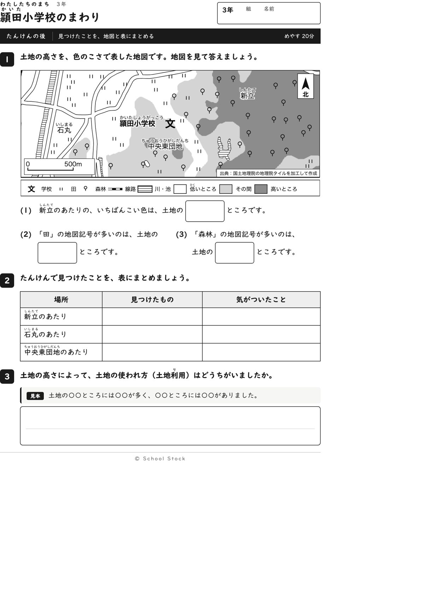
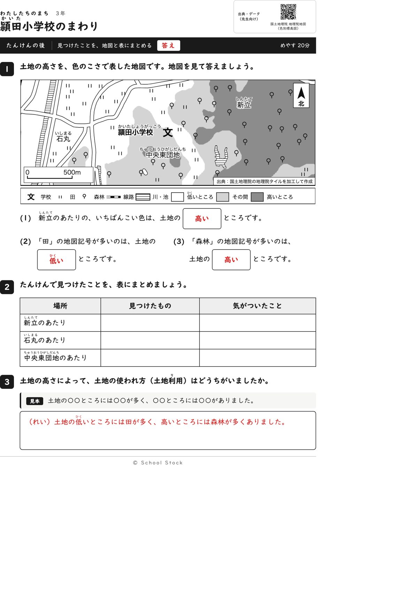
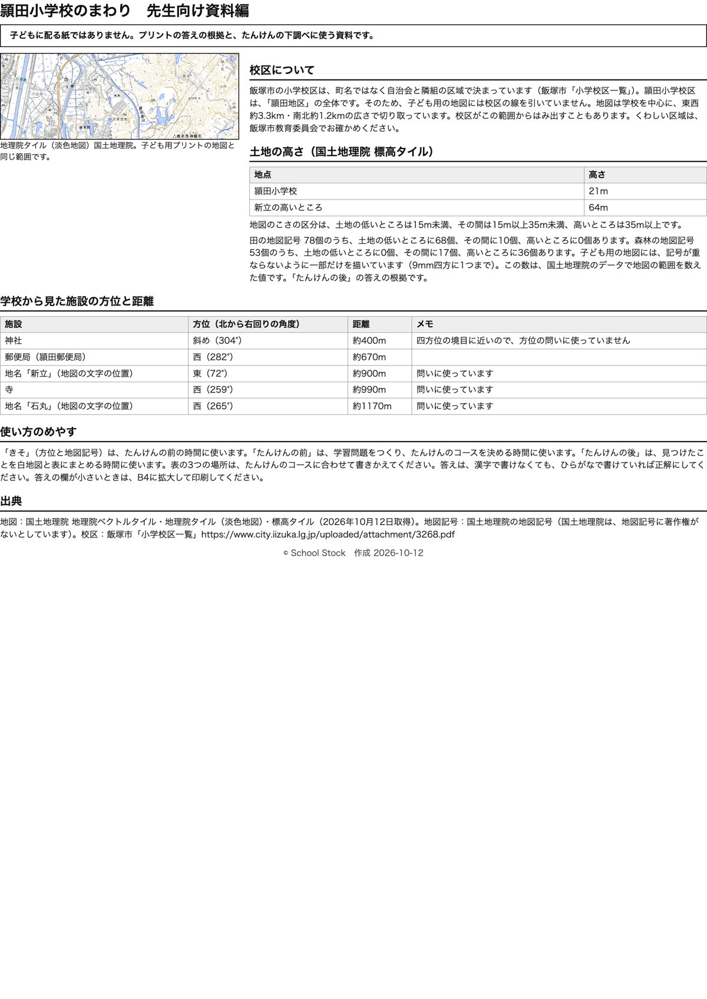

紙





直すところ
直すところはありません。
1回目のレビューで出た直し（1件・道具を直して作り直しました）
| 紙 | どこ | 何が困るか |
|---|---|---|
| たんけんの前、たんけんの後 | 地図の下の凡例の「川」と、地図の右側にある縞の形 | 縞の形は池なのに、凡例では川と書かれています。地図の事実が違い、池を川と覚える子が出ます。 |
専門家団の声（いまの紙を見て）
香月八重筆頭・全学年
学年は合っています。方位、記号を凡例から探す問い、こい色から高いところを読む順は、3年の歩幅のままです。つかむことは、低いところに田、高いところに森林があることで、一文で言えます。
日隈耕平社会
縮尺は白い地の上で読め、地名や学校名、出典の箱と文字が重なる所はありません。郵便局282度、寺259度、新立72度、石丸265度で、四方位として答えが決まります。神社304度は斜めなので問いに使っていません。田78個のうち68個が低いところ、森林53個のうち36個が高いところで、資料編と合っています。気になるのは、後の地図の下のほうで、森林の記号が白い小さな楕円（凡例にない記号）に半分かかっていることです。文字ではないので直しには入れませんが、先生が聞かれたら答えられるよう、一言あるとよいです。
藤川湊すぐ終わる子
後の(1)は、こい色は高いと読めばすぐ終わります。その後の表と3の文章で、新立と団地のあたりの違いを書く手ごたえがあります。
田淵さくら例がないと止まる子
前は(1)から北と書けて、最初につまずきません。後は凡例の言葉を探せば答えが出て、赤字の例も同じ型です。
轟大和読む前に諦める子
前の問いは短く、卍は記号で場所が分かります。後の問いも2行以内で、字を読まなくても凡例を探せば動けます。白紙にはなりにくいと思います。